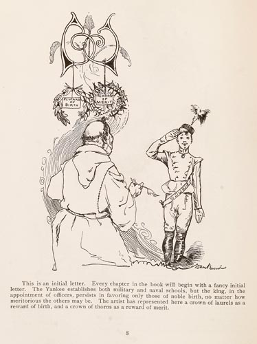

|  |
This is an initial letter. Every chapter in the book will begin with a fancy initial letter. The Yankee establishes both military and naval schools, but the king, in the appointment of officers, persists in favoring only those of noble birth, no matter how meritorious the others may be. The artist has represented here a crown of laurels as a reward of birth, and a crown of thorns as a reward of merit. |